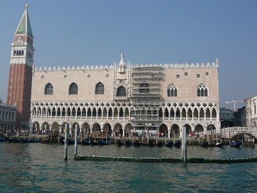
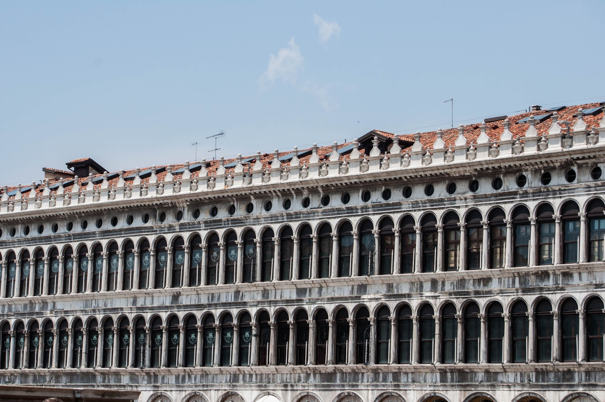

În Veneția, un palat este în general denumit Casa (abreviat Ca′). Au existat doar două palate din oraș care au fost desemnate ca atare: Palatul Dogilor (Palazzo Ducale) și reședința Patriarhilor Venetiei.
Din așa-numitele palatele bizantine mai există doar câteva și acestea au fost în mare parte în secolul al XIX-lea modificate. Un aspect bun din secolul al XIII-lea îl dă palatul Fondaco dei Turchi, edificiu ridicat probabil în secolul al XIII-lea, este cel mai vechi palat venețian. El a servit ulterior drept reședință a negustorilor turci. Clădirea este o mărturie importantă a stilului veneto-bizantin, în pofida unor falsificări datorate renovărilor secolului al XIX-lea. Tipică pentru o casă comercială din evul mediu timpuriu este structurarea pe două etaje; parterul, la nivelul apei, folosea stocării mărfurilor, etajul era locuit. Colțurile clădirii sunt evidențiate prin turnuri scunde („torreselli”). Fațada este structurată în întregime de arcaturi și este bogată în ornamente precum basoreliefuri, tondi sculptați și creneluri. În evul mediu palatul era renumit pentru luxul său; astfel, el a servit împăratului bizantin Ioan al VIII-lea Paleologul drept reședință, în anul 1438. Din 1621 până în 1838 palatul a fost închiriat de către reprezentanții comerciali osmani. Astăzi palatul adăpostește colecțiile Muzeului de Istorie Naturală. Unul din cele mai vechi palate este Ca' da Mosto, care își are originea în secolul al XIII-lea. Detaliile decorative la palatele Loredan și Farsetti, acum primăria și administrația locală, provin în mare parte din secolul al XIX-lea.
În decursul goticului, planul camerei în formă de T a fost abandonat în favoarea unei ușoare forme în L. Cea mai mare clădire gotică este Ca' Foscari. Case semnificative ale secolului al XVI-lea sunt: Palatul Vendramin-Calergi (Ca' Vendramin Calergi) și Palatul Corner Spinelli (Palazzo Corner Spinelli). Primul este celebru palat renascentist, ridicat între anii 1481-1509 de către Mauro Codussi și frații Lombardo. Azi acest palat este sediul cazinoului orașului. Palatul este locul morții, în 1883, a compozitorului Richard Wagner. În anul 1995 a fost deschis muzeul Wagner Richard.Mauro Codussis. În ceea ce privește secular, așa ai putea, destul de spre deosebire de clădirea sacră, Andrea Palladio în Veneția nu câștige un punct de sprijin.
Jacopo Sansovino proiectează Ca 'Corner, un palat al familiei Cornarope situat pe Canal Grande, o construcție epocală renascentistă, cu o curte pătrată după modelul roman. Un alt arhitect important al "Il cinquecento", a fost Sebastiano Serlio.
 